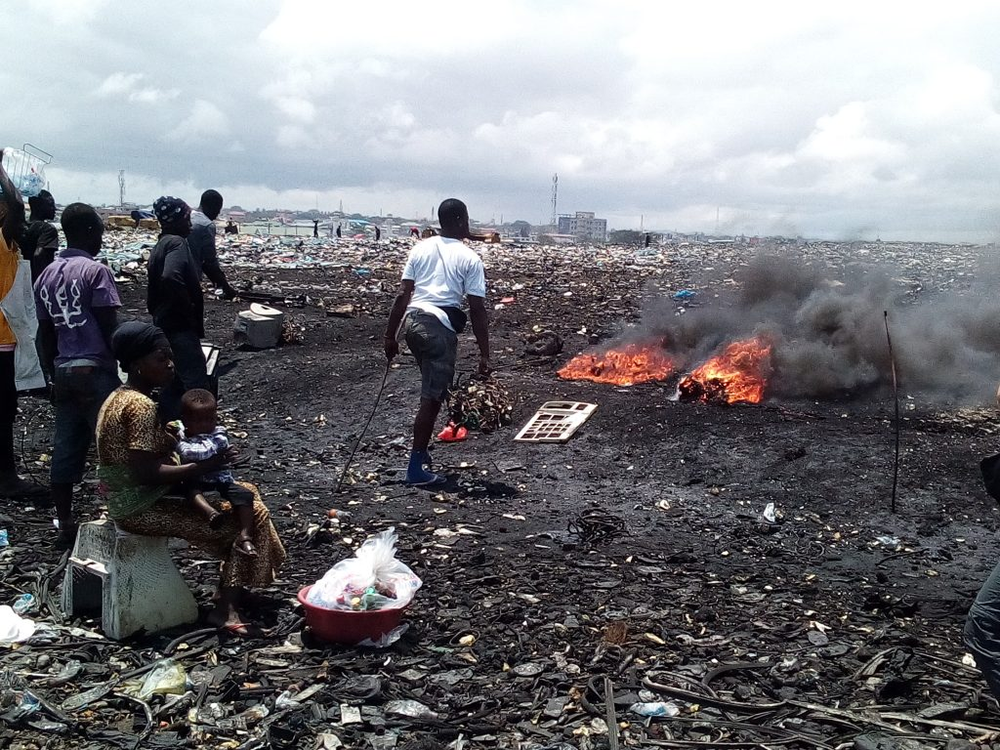

Hi ha molts casos que es van documentant, ja que per desgràcia constantment s’exporten residus electrònics de manera il·legal, aquests n’és un exemple rellevant.
El 17/3/2026 es van detenir a 30 persones per l’enviament il·legal de 650 tones de residus, molts d’ells electrònics des de Tenerife a diversos països africans probablement essent aquests Ghana i Nigèria, que en són els receptors d’aquests tipus de deixalles. Els detinguts amagaven la seva activitat amb factures falses per evitar la inspecció dels contenidors.
Les conseqüències d’aquesta activitat es poden veure, per exemple, a les afores d’Acra, la capital de Ghana, on telèfons, ordinadors, bateries, impresores, entre d’altres residus, s’amunteguen a la deixalleria d'Agbogbloshie ocupant-ne 31 hectàrees.
Només amb una dècada aquesta zona ha perdut tota la seva biodiversitat a causa de la contaminació tant del sòl com de l’aigua.Els habitants del barri també en pateixen les conseqüències ja que a part de viure en un espai contaminat, han de rebuscar entre les deixalles per trobar-ne materials com el coure i el liti per vendre’ls.